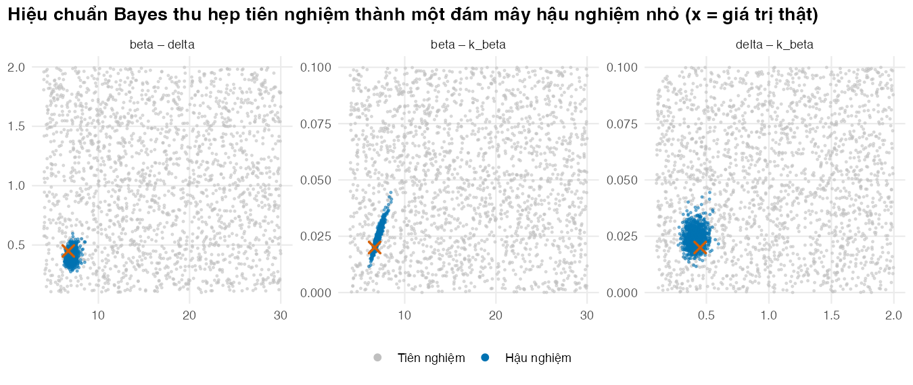
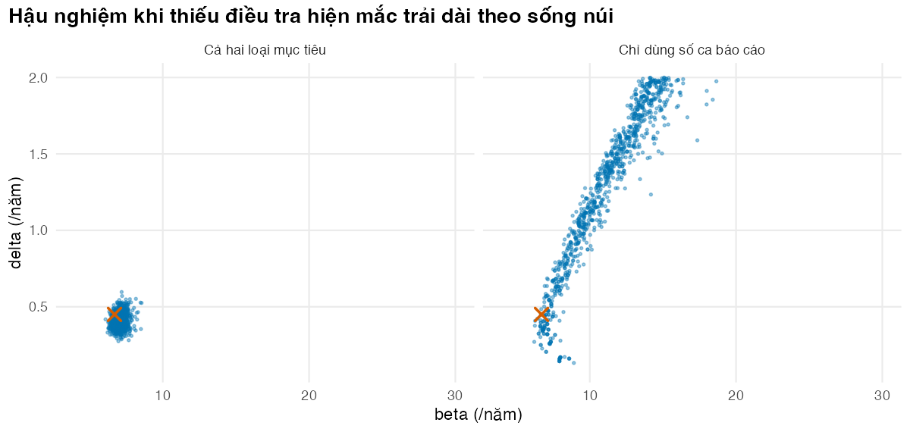

if (!isTRUE(l10n_info()[["UTF-8"]])) invisible(Sys.setlocale("LC_CTYPE", "en_US.UTF-8"))
source("../_shared/R/helpers.R")
source("../_shared/R/vn_data.R")
source("code/model.R")
library(ggplot2)
p <- tb_params()
pc <- read_params("params/calibration.csv")
bounds <- prior_bounds(pc)
th_true <- theta_true(pc)
targets <- make_targets(p, pc, seed = 2025) # SIMULATED targets (see Lesson 1)Bài 3: Hiệu chuẩn Bayes và thuật toán SIR
Thu được cả một phân phối hậu nghiệm các bộ tham số, không chỉ một điểm, bằng code viết từ đầu
Vì sao bạn nên quan tâm?
Ủy ban nhân dân một tỉnh 1,000,000 dân hỏi: nếu mỗi năm sàng lọc 2X (X-quang ngực rồi Xpert) cho 25% dân số từ 2026 đến 2035, tỉnh tốn thêm bao nhiêu và tránh được bao nhiêu ca lao? Với một bộ tham số duy nhất, câu trả lời là khoảng 215 tỷ VNĐ, bằng tiền lương tối thiểu vùng I của 3,374 người lao động trong một năm, để tránh khoảng 784 ca lao (Bộ Y tế 2024; Schwalb và c.s. 2025; Chính phủ 2025). Nhưng nếu người bệnh thật ra được phát hiện nhanh hơn mô hình nghĩ, sàng lọc tìm được ít người hơn và cùng số tiền đó mua được ít sức khỏe hơn. Bài này cho bạn cả một phân phối các bộ tham số phù hợp với dữ liệu, để trả lời tỉnh kèm theo mức chắc chắn.
Mục tiêu học tập
Sau bài này, bạn có thể:
- Viết định lý Bayes cho bài toán hiệu chuẩn và giải thích vai trò của phân phối tiên nghiệm (prior), hàm hợp lý và phân phối hậu nghiệm (posterior).
- Cài đặt từ đầu thuật toán lấy mẫu–tái lấy mẫu theo trọng số quan trọng (sampling-importance resampling, SIR) và chẩn đoán nó bằng cỡ mẫu hiệu dụng (effective sample size, ESS).
- Giải thích vì sao SIR lãng phí khi hậu nghiệm hẹp, và cải thiện nó bằng hai vòng của phiên bản rút gọn của IMIS.
- Đọc hậu nghiệm: trung bình, khoảng tin cậy Bayes (credible interval) 95%, tương quan giữa các tham số, và dấu hiệu không nhận dạng được.
- Nêu khi nào nên dùng IMIS, tính toán Bayes xấp xỉ (ABC) hoặc Monte Carlo xích Markov (MCMC).
Ý chính
- Hậu nghiệm tỷ lệ với tiên nghiệm nhân hàm hợp lý. Kết quả của hiệu chuẩn Bayes là một tập bộ tham số, mỗi bộ xuất hiện với tần suất tương xứng mức phù hợp và mức hợp lý ban đầu của nó.
- SIR gồm bốn bước: rút từ tiên nghiệm, chạy mô hình, cân theo hàm hợp lý, rút lại có hoàn lại. Code chỉ vài dòng.
- Luôn báo cáo ESS \(= 1/\sum w_i^2\) và số bộ khác nhau sau khi rút lại. ESS nhỏ nghĩa là “hậu nghiệm” thực chất chỉ dựa vào vài bộ tham số.
- Khi hậu nghiệm hẹp hơn tiên nghiệm rất nhiều, SIR bỏ phí gần hết số lần chạy; IMIS rút thêm điểm quanh vùng trọng số cao rồi tính lại mọi trọng số.
- Hậu nghiệm giữ tương quan giữa các tham số, và tương quan này phải được mang nguyên vẹn sang PSA (Bài 4).
- Không nhận dạng được hiện ra thành hậu nghiệm trải dọc sống núi; ở đó dữ liệu gần như không phân biệt các điểm, nên tiên nghiệm quyết định vị trí khối lượng xác suất.
- MCMC phù hợp khi có nhiều tham số; ABC phù hợp khi không viết được hàm hợp lý, nhưng phải mô phỏng cả sai số quan sát.
Nội dung
Từ một điểm đến một phân phối
Bài 2 cho một bộ tham số phù hợp nhất nhưng không nói nó chắc chắn đến đâu. Đánh giá kinh tế lại cần cả phân phối, vì phân tích độ nhạy xác suất (PSA) phải lan truyền bất định của mọi tham số đến kết quả (Briggs và c.s. 2012). Hiệu chuẩn Bayes cho đúng thứ đó (Kennedy và O’Hagan 2001; Menzies và c.s. 2017):
\[ p(\theta \mid y) = \frac{L(\theta)\, p(\theta)}{\int L(\vartheta)\, p(\vartheta)\, d\vartheta} \;\propto\; L(\theta)\, p(\theta), \]
trong đó \(p(\theta)\) là tiên nghiệm, \(L(\theta) = p(y \mid \theta)\) là hàm hợp lý của các mục tiêu (Bài 1), và \(p(\theta \mid y)\) là hậu nghiệm. Ở đây tiên nghiệm của cả ba tham số là phân phối đều trên khoảng trong params/calibration.csv (các khoảng này là giá trị minh họa). Tiên nghiệm đều không có nghĩa là “không có thông tin”: nó khẳng định giá trị ngoài khoảng là bất khả, và một tiên nghiệm đều trên \(\delta\) khác một tiên nghiệm đều trên \(\log \delta\). Mẫu số là một tích phân khó tính, nhưng các thuật toán dưới đây không cần đến nó.
Thuật toán SIR
Chữ SIR ở đây là thuật toán lấy mẫu–tái lấy mẫu, khác với mô hình SIR (cảm nhiễm–lây nhiễm–hồi phục) ở M05. Thuật toán biến các lần chạy mô hình thành mẫu hậu nghiệm (Smith và Gelfand 1992):
- Rút \(N\) bộ tham số \(\theta_1, \dots, \theta_N\) từ tiên nghiệm.
- Chạy mô hình và tính log của hàm hợp lý (log-likelihood) \(\ell_i\) cho từng bộ.
- Tính trọng số \(w_i = e^{\ell_i - \max \ell} \big/ \sum_k e^{\ell_k - \max \ell}\). Trừ \(\max \ell\) trước khi lấy mũ để tránh tràn số về 0; trọng số không đổi vì hằng số bị triệt tiêu khi chuẩn hóa.
- Rút lại \(M\) bộ có hoàn lại với xác suất \(w_i\).
Vì các bộ được rút từ chính tiên nghiệm, trọng số chỉ còn tỷ lệ với hàm hợp lý. Chẩn đoán quan trọng nhất là ESS \(= 1 / \sum_i w_i^2\): nếu mọi trọng số bằng nhau thì ESS bằng \(N\); nếu một bộ chiếm toàn bộ trọng số thì ESS bằng 1.
Khi SIR không đủ: phiên bản rút gọn của IMIS
Khi hậu nghiệm chỉ chiếm một phần rất nhỏ của tiên nghiệm, gần như mọi lần chạy đều có trọng số bằng 0. Thuật toán lấy mẫu quan trọng hỗn hợp tăng dần (incremental mixture importance sampling, IMIS) xử lý việc này: sau mỗi vòng, nó đặt thêm các phân phối chuẩn quanh vùng có trọng số cao, rút điểm mới từ đó, rồi tính lại trọng số của mọi điểm theo hàm đề xuất hỗn hợp (Raftery và Bao 2010):
\[ w_i \propto \frac{L(\theta_i)\, p(\theta_i)}{q(\theta_i)}, \qquad q(\theta) = \frac{N_0\, p(\theta) + \sum_r N_r\, \phi(\theta;\, \mu_r, \Sigma_r)}{N_0 + \sum_r N_r} . \]
Hàm imis_lite() trong code/model.R là phiên bản rút gọn: mỗi vòng chỉ thêm một phân phối chuẩn, với trung bình và hiệp phương sai lấy từ các điểm hiện có theo trọng số, hiệp phương sai được nhân 2 cho rộng hơn. IMIS đầy đủ thêm nhiều thành phần nhỏ quanh các điểm có trọng số lớn nhất và có quy tắc dừng riêng. Trong một mô hình dịch tả ở Bangladesh, IMIS cho hàm hợp lý cao hơn và nhiều bộ tham số khác nhau hơn so với SIR và tìm kiếm ngẫu nhiên (Ryckman và c.s. 2020).
Bước tiếp theo: MCMC và ABC
MCMC, ví dụ thuật toán Metropolis–Hastings, đi một bước ngẫu nhiên từ bộ tham số hiện tại, chấp nhận bước đó với xác suất phụ thuộc tỷ số hậu nghiệm, và sau đủ nhiều bước tạo ra một chuỗi có phân phối dừng là hậu nghiệm. MCMC lấy mẫu hiệu quả trong không gian nhiều tham số có tương quan (Whyte, Walsh, và Chilcott 2011), nhưng tốn tính toán (Rutter, Miglioretti, và Savarino 2009) và cần kiểm tra hội tụ. Mỗi chuỗi chạy tuần tự, nên tận dụng song song kém hơn SIR. Khi mô hình chứa nhiều nguồn dữ liệu gián tiếp, có thể dựng cả mô hình thống kê và mô hình bệnh trong một khung Bayes thống nhất (Jackson và c.s. 2015).
ABC bỏ qua hàm hợp lý: nó chỉ giữ các bộ tham số mà dữ liệu mô phỏng đủ gần dữ liệu quan sát (Toni và c.s. 2009). Dữ liệu mô phỏng phải gồm cả sai số quan sát. Với mô hình tất định mà không thêm sai số, ngưỡng chấp nhận tự đóng vai một mô hình sai số ngầm, và khi ngưỡng nhỏ dần, vùng chấp nhận co về bộ phù hợp nhất chứ không về hậu nghiệm. ABC có sai số quan sát tiến tới hậu nghiệm khi ngưỡng tiến tới 0, nhưng tỷ lệ chấp nhận thấp khi tiên nghiệm khác xa hậu nghiệm; ABC dùng Monte Carlo tuần tự (ABC-SMC) hạ ngưỡng dần qua nhiều thế hệ để giảm vấn đề đó (Toni và c.s. 2009). Bài tập 3 làm cả hai phiên bản.
Thực hành
Nạp hàm, tham số (kể cả số liệu Việt Nam dùng chung) và mục tiêu mô phỏng.
Bước 1–2 của SIR: rút bộ tham số từ tiên nghiệm đều, chạy mô hình cho tất cả trong một lần gọi, rồi tính log-likelihood. Kiểm tra: mọi log-likelihood đều hữu hạn.
# Step 1: draw parameter sets from the (uniform) priors and run the model for all of them
set.seed(2030)
n_prior <- 50000
X_prior <- random_sample(n_prior, bounds$lower, bounds$upper)
t_prior <- system.time(sim_prior <- run_tb_model(X_prior, p))
t_prior[["elapsed"]][1] 7.154# Step 2: log-likelihood of the calibration targets for every draw
ll_prior <- loglik_targets(sim_prior, targets)
stopifnot(length(ll_prior) == n_prior, all(is.finite(ll_prior)))
summary(ll_prior) Min. 1st Qu. Median Mean 3rd Qu. Max.
-211364.86 -2804.73 -1016.56 -4411.71 -308.85 -46.81 50,000 lần chạy mất 7.2 giây. Log-likelihood trải từ rất thấp đến gần cực đại: phần lớn tiên nghiệm hoàn toàn không phù hợp với mục tiêu. Bước 3–4: tính trọng số rồi rút lại có hoàn lại. Kiểm tra: tổng trọng số bằng 1 và số bộ rút lại đúng như yêu cầu.
# Steps 3-4: weights proportional to the likelihood, then resample 1,000 sets
n_post <- 1000
sir <- sir_resample(X_prior, ll_prior, n_post)
sir_diag <- c(ess = sir$ess, unique_sets = sir$n_unique, max_weight = sir$max_w)
round(sir_diag, 3) ess unique_sets max_weight
9.261 38.000 0.176 stopifnot(abs(sum(sir$w) - 1) < 1e-12, nrow(sir$post) == n_post)ESS chỉ là 9.3 trên 50,000 lần chạy; trong 1,000 bộ rút lại chỉ có 38 bộ khác nhau, và một bộ chiếm 17.6% tổng trọng số. Tóm tắt “hậu nghiệm” từ ngần ấy điểm không đáng tin:
# With so few distinct draws the posterior summary is unstable
sir_summary <- summarise_sets(sir$post)
sir_summary$truth <- th_true[sir_summary$param]
sir_summary[, -1] <- round(sir_summary[, -1], 4)
sir_summary param mean lo hi truth
1 beta 7.0190 6.5037 7.9665 6.70
2 delta 0.3972 0.3240 0.5032 0.45
3 k_beta 0.0241 0.0173 0.0338 0.02Giờ thêm hai vòng của phiên bản rút gọn của IMIS. Kiểm tra: ESS cuối cùng phải lớn hơn ESS ban đầu hàng trăm lần.
# Two rounds of a simplified IMIS: normal proposals centred where the weights are
set.seed(2031)
n_new <- 10000 # new draws per round
imis <- imis_lite(X_prior, ll_prior, p, targets, bounds$lower, bounds$upper,
rounds = 2, n_new = n_new, inflate = imis_inflate)
ess_tab <- data.frame(stage = c("Chỉ tiên nghiệm", "Sau vòng 1", "Sau vòng 2"),
n_draws = c(n_prior, n_prior + n_new, n_prior + 2 * n_new),
ess = round(imis$ess, 1))
ess_tab stage n_draws ess
1 Chỉ tiên nghiệm 50000 9.3
2 Sau vòng 1 60000 5286.4
3 Sau vòng 2 70000 11142.3idx <- sample(nrow(imis$theta), n_post, replace = TRUE, prob = imis$w)
post <- imis$theta[idx, ]
n_unique_imis <- length(unique(idx))
n_unique_imis[1] 951stopifnot(imis$ess[3] > 100 * imis$ess[1])Chỉ với 20,000 lần chạy thêm (10,000 mỗi vòng), ESS tăng từ 9.3 lên 11,142, và 951 trong 1,000 bộ hậu nghiệm là khác nhau. Tóm tắt hậu nghiệm và so với giá trị thật. Kiểm tra: khoảng tin cậy Bayes 95% của mỗi tham số chứa giá trị thật.
post_summary <- summarise_sets(post)
post_summary$truth <- th_true[post_summary$param]
post_summary$prior_lo <- bounds$lower[post_summary$param]
post_summary$prior_hi <- bounds$upper[post_summary$param]
post_summary[, -1] <- round(post_summary[, -1], 4)
post_summary param mean lo hi truth prior_lo prior_hi
1 beta 7.0509 6.4396 7.7501 6.70 4.0 30.0
2 delta 0.4088 0.3204 0.5163 0.45 0.1 2.0
3 k_beta 0.0245 0.0169 0.0337 0.02 0.0 0.1# Posterior correlations: the calibrated parameters move together
post_cor <- round(cor(post), 2)
post_cor beta delta k_beta
beta 1.00 0.21 0.95
delta 0.21 1.00 0.13
k_beta 0.95 0.13 1.00# How much narrower than the prior? (width of the 95% interval / width of the prior)
shrink <- (post_summary$hi - post_summary$lo) / (post_summary$prior_hi - post_summary$prior_lo)
names(shrink) <- post_summary$param
round(shrink, 3) beta delta k_beta
0.050 0.103 0.168 stopifnot(all(post_summary$truth >= post_summary$lo & post_summary$truth <= post_summary$hi),
post_cor["beta", "k_beta"] > 0.5)Hậu nghiệm của \(\delta\) có trung bình 0.409 và khoảng tin cậy Bayes 95% từ 0.320 đến 0.516, chỉ rộng bằng 10% khoảng tiên nghiệm. Tương quan giữa \(\beta\) và \(k_\beta\) là 0.95: lây truyền ban đầu cao hơn chỉ khớp số ca báo cáo nếu lây truyền giảm nhanh hơn. Hình dưới vẽ từng cặp tham số, tiên nghiệm cạnh hậu nghiệm, để thấy hậu nghiệm thu nhỏ và nghiêng theo tương quan.
# Pairwise scatter: 2,000 prior draws (grey) versus the 1,000 posterior sets (blue)
pair_df <- function(X, label) {
rbind(data.frame(x = X[, "beta"], y = X[, "delta"], pair = "beta – delta", set = label),
data.frame(x = X[, "beta"], y = X[, "k_beta"], pair = "beta – k_beta", set = label),
data.frame(x = X[, "delta"], y = X[, "k_beta"], pair = "delta – k_beta", set = label))
}
truth_df <- data.frame(x = th_true[c("beta", "beta", "delta")],
y = th_true[c("delta", "k_beta", "k_beta")],
pair = c("beta – delta", "beta – k_beta", "delta – k_beta"))
plot_df <- rbind(pair_df(X_prior[1:2000, ], "Tiên nghiệm"), pair_df(post, "Hậu nghiệm"))
plot_df$set <- factor(plot_df$set, levels = c("Tiên nghiệm", "Hậu nghiệm"))
fig_post <- ggplot(plot_df, aes(x, y, colour = set)) +
geom_point(size = 0.5, alpha = 0.5) +
geom_point(data = truth_df, aes(x, y), inherit.aes = FALSE, shape = 4, size = 3,
stroke = 1.2, colour = pal_course[2]) +
facet_wrap(~pair, scales = "free") +
scale_colour_manual(values = c("grey75", pal_course[1]), name = NULL) +
guides(colour = guide_legend(override.aes = list(size = 2, alpha = 1))) +
labs(x = NULL, y = NULL, title = "Hiệu chuẩn Bayes thu hẹp tiên nghiệm thành một đám mây hậu nghiệm nhỏ (x = giá trị thật)") +
theme_course()
save_fig(fig_post, "l03-posterior.png", width = 9, height = 3.8)
Bài 2 cho khoảng xấp xỉ từ độ cong của log-likelihood. So nó với khoảng tin cậy Bayes, từng tham số một. Kiểm tra: hai khoảng có độ rộng tương đương.
# Lesson 2 gave an approximate interval from the curvature of the log-likelihood at the best fit.
# Compare it with the credible interval of the posterior, parameter by parameter.
mle_fit <- fit_nelder_mead(colMeans(post), p, targets, bounds$lower, bounds$upper)
hess_ci <- hessian_ci(mle_fit[CALIB_NAMES], p, targets)
ci_compare <- data.frame(param = hess_ci$param,
hessian_lo = hess_ci$lo, hessian_hi = hess_ci$hi,
posterior_lo = post_summary$lo, posterior_hi = post_summary$hi)
ci_compare[, -1] <- round(ci_compare[, -1], 3)
ci_compare param hessian_lo hessian_hi posterior_lo posterior_hi
1 beta 6.283 7.563 6.440 7.750
2 delta 0.304 0.489 0.320 0.516
3 k_beta 0.015 0.032 0.017 0.034width_hess_post <- (hess_ci$hi - hess_ci$lo) / (post_summary$hi - post_summary$lo)
names(width_hess_post) <- hess_ci$param
round(width_hess_post, 2) beta delta k_beta
0.98 0.95 0.99 stopifnot(all(abs(width_hess_post - 1) < 0.2)) # the two intervals have similar widths hereVới \(\delta\), khoảng từ độ cong là 0.304–0.489, còn khoảng tin cậy Bayes là 0.320–0.516; độ rộng của khoảng đầu bằng 95% khoảng sau. Hai khoảng gần nhau vì với đủ thông tin, mặt log-likelihood gần parabol quanh đỉnh. Khoảng Bayes còn tính đến tiên nghiệm, có thể bất đối xứng, và vẫn dùng được khi Hessian suy biến.
Cuối cùng, lặp lại toàn bộ quy trình nhưng chỉ dùng số ca báo cáo, giống Bài 1 và 2. Kiểm tra: so khoảng tin cậy của \(\delta\) giữa hai cách, rồi xem vị trí khối lượng xác suất dọc sống núi thay đổi thế nào khi đổi tiên nghiệm.
# The same Bayesian calibration with notifications only: the posterior spreads along the ridge
set.seed(2032)
ll_notif <- loglik_targets(sim_prior, targets, types = "notif")
imis_n <- imis_lite(X_prior, ll_notif, p, targets, bounds$lower, bounds$upper,
rounds = 2, n_new = n_new, inflate = imis_inflate, types = "notif")
post_n <- imis_n$theta[sample(nrow(imis_n$theta), n_post, replace = TRUE, prob = imis_n$w), ]
compare_tab <- rbind(
cbind(targets = "notif+prev", summarise_sets(post)),
cbind(targets = "notif only", summarise_sets(post_n))
)
compare_tab[, 3:5] <- round(compare_tab[, 3:5], 4)
compare_tab targets param mean lo hi
1 notif+prev beta 7.0509 6.4396 7.7501
2 notif+prev delta 0.4088 0.3204 0.5163
3 notif+prev k_beta 0.0245 0.0169 0.0337
4 notif only beta 11.0385 6.7871 15.3053
5 notif only delta 1.2617 0.2574 1.9788
6 notif only k_beta 0.0310 0.0171 0.0547width_ratio <- unname((quantile(post_n[, "delta"], 0.975) - quantile(post_n[, "delta"], 0.025)) /
(quantile(post[, "delta"], 0.975) - quantile(post[, "delta"], 0.025)))
round(width_ratio, 1)[1] 8.8# Share of the prior range of delta covered by the notification-only 95% interval
ci_delta_n <- quantile(post_n[, "delta"], c(0.025, 0.975))
share_prior_range_n <- unname(diff(ci_delta_n) / (bounds$upper[["delta"]] - bounds$lower[["delta"]]))
round(share_prior_range_n, 2)[1] 0.91cor_bd_notif <- cor(post_n[, "beta"], post_n[, "delta"])
round(cor_bd_notif, 2)[1] 0.95# Where does the mass sit along the ridge? Under a uniform prior on delta ...
share_delta_gt1 <- mean(post_n[, "delta"] > 1)
# ... and under an equally vague log-uniform prior (density proportional to 1/delta):
# reweight each posterior set by the ratio of the new prior to the old one
w_logu <- 1 / post_n[, "delta"]
median_delta <- c(uniform_prior = median(post_n[, "delta"]),
log_uniform_prior = weighted_quantile(post_n[, "delta"], w_logu, 0.5))
share_delta_gt1_logu <- weighted.mean(post_n[, "delta"] > 1, w_logu)
round(c(median_delta, share_delta_gt1 = share_delta_gt1, share_delta_gt1_logu = share_delta_gt1_logu), 2) uniform_prior log_uniform_prior share_delta_gt1
1.36 0.82 0.70
share_delta_gt1_logu
0.43 stopifnot(width_ratio > 1.5, median_delta[["log_uniform_prior"]] < median_delta[["uniform_prior"]],
share_delta_gt1 > 0.5) # the text says the mass sits at large delta under the uniform priorThiếu điều tra hiện mắc, khoảng tin cậy 95% của \(\delta\) rộng gấp 8.8 lần và chiếm 91% khoảng tiên nghiệm; \(\beta\) và \(\delta\) có tương quan 0.95. Dọc sống núi, hàm hợp lý gần như phẳng, nên hậu nghiệm không còn do dữ liệu quyết định mà do tiên nghiệm và bề rộng của sống núi. Hình dưới cho thấy khối lượng dồn về phía \(\delta\) lớn: với tiên nghiệm đều trên \(\delta\), 70% hậu nghiệm có \(\delta > 1\) và trung vị là 1.36. Gán trọng số \(1/\delta\) cho mỗi bộ, tức đổi sang tiên nghiệm log-đều cũng mơ hồ như vậy, đưa trung vị xuống 0.82 và tỷ lệ \(\delta > 1\) xuống 43%. Không có điểm nào “sai”: đây là cách Bayes báo tính không nhận dạng được, và kết luận về \(\delta\) chỉ đáng tin tới mức tiên nghiệm đáng tin.
ni_df <- rbind(data.frame(beta = post[, "beta"], delta = post[, "delta"], targets = "Cả hai loại mục tiêu"),
data.frame(beta = post_n[, "beta"], delta = post_n[, "delta"], targets = "Chỉ dùng số ca báo cáo"))
ni_df$targets <- factor(ni_df$targets, levels = c("Cả hai loại mục tiêu", "Chỉ dùng số ca báo cáo"))
fig_ni <- ggplot(ni_df, aes(beta, delta)) +
geom_point(colour = pal_course[1], size = 0.6, alpha = 0.4) +
annotate("point", x = th_true[["beta"]], y = th_true[["delta"]], shape = 4, size = 3,
stroke = 1.2, colour = pal_course[2]) +
facet_wrap(~targets) +
coord_cartesian(xlim = c(bounds$lower[["beta"]], bounds$upper[["beta"]]),
ylim = c(bounds$lower[["delta"]], bounds$upper[["delta"]])) +
labs(x = "beta (/năm)", y = "delta (/năm)",
title = "Hậu nghiệm khi thiếu điều tra hiện mắc trải dài theo sống núi") +
theme_course()
save_fig(fig_ni, "l03-nonident.png", width = 8, height = 3.8)
Mẹo thực hành
- Báo cáo ESS và số bộ khác nhau cạnh mọi hậu nghiệm. Hai con số này cho người đọc biết hậu nghiệm dựa trên bao nhiêu thông tin thật.
- Dùng lại mọi lần chạy đã có. Các bộ của tìm kiếm LHS (Bài 2) và của SIR chính là điểm xuất phát cho IMIS.
- Tách code mô hình khỏi code thuật toán:
run_tb_model()nhận một ma trận tham số và không biết gì về SIR. Nhờ vậy cùng một mô hình chạy được với tìm kiếm, Nelder–Mead, SIR và IMIS. - Đặt
set.seed()trước mọi bước ngẫu nhiên, kể cả bước rút lại, để hậu nghiệm tái lập được. - Đổi tiên nghiệm bằng cách gán trọng số (tỷ số tiên nghiệm mới trên cũ) là cách rẻ nhất để kiểm tra độ nhạy của kết luận với tiên nghiệm.
Lỗi thường gặp
- Lấy mũ log-likelihood trực tiếp. Với log-likelihood cỡ âm vài nghìn,
exp()trả về 0 cho mọi bộ và trọng số thànhNaN. Luôn trừ cực đại trước. - Báo cáo hậu nghiệm từ ESS rất nhỏ. Một nghìn bộ “hậu nghiệm” có thể chỉ là vài chục bộ lặp lại nhiều lần.
- Tiên nghiệm loại trừ giá trị thật. Hậu nghiệm không bao giờ ra ngoài miền của tiên nghiệm; nó sẽ dồn vào biên (Bài tập 2). Hậu nghiệm dồn sát biên là dấu hiệu cần xem lại khoảng tiên nghiệm.
- Tóm tắt từng tham số rồi bỏ tương quan. Trung bình và khoảng tin cậy riêng lẻ không đủ để dựng lại hậu nghiệm; hãy giữ nguyên ma trận các bộ tham số.
- ABC trên mô hình tất định mà không thêm sai số quan sát. Ngưỡng thành mô hình sai số ngầm, và thu nhỏ ngưỡng chỉ đưa bạn về bộ phù hợp nhất (Bài tập 3).
Bài tập
Bài 1 (dễ). Chạy SIR chỉ với 5,000 bộ đầu tiên của tiên nghiệm. ESS và số bộ khác nhau là bao nhiêu?
Lời giải
# Exercise 1: SIR with ten times fewer prior draws: how many distinct sets survive?
set.seed(2033)
small <- 1:ex1_n_small
sir_small <- sir_resample(X_prior[small, ], ll_prior[small], n_post)
ex1_diag <- c(ess = sir_small$ess, unique_sets = sir_small$n_unique)
round(ex1_diag, 1) ess unique_sets
2.3 8.0 ESS chỉ còn 2.3 và chỉ có 8 bộ khác nhau. Với hậu nghiệm hẹp như bài này, SIR thuần cần số lần chạy lớn hơn nhiều, hoặc một thuật toán thích nghi như IMIS.
Bài 2 (trung bình). Giả sử chuyên gia khẳng định \(\delta\) nằm trong khoảng 0.5 đến 1.0. Dùng lại các bộ tiên nghiệm, chỉ giữ những bộ trong khoảng mới, rồi chạy SIR và hai vòng IMIS trên khoảng đã thu hẹp. Hậu nghiệm của \(\delta\) trông thế nào?
Lời giải
# Exercise 2: a prior that excludes the truth. Restrict delta to the expert window by dropping
# prior draws outside it. Plain SIR leaves a handful of useful draws, so use two IMIS rounds
# on the narrowed bounds
set.seed(2034)
in_new_prior <- X_prior[, "delta"] >= ex2_delta_window[1] & X_prior[, "delta"] <= ex2_delta_window[2]
lower_new <- bounds$lower
upper_new <- bounds$upper
lower_new["delta"] <- ex2_delta_window[1]
upper_new["delta"] <- ex2_delta_window[2]
sir_narrow <- sir_resample(X_prior[in_new_prior, ], ll_prior[in_new_prior], n_post)
imis_narrow <- imis_lite(X_prior[in_new_prior, ], ll_prior[in_new_prior], p, targets,
lower_new, upper_new, rounds = 2, n_new = ex2_n_new, inflate = imis_inflate)
idx_narrow <- sample(nrow(imis_narrow$theta), n_post, replace = TRUE, prob = imis_narrow$w)
post_narrow <- imis_narrow$theta[idx_narrow, ]
ex2_diag <- c(n_draws = sum(in_new_prior), ess_sir = sir_narrow$ess, ess_imis = imis_narrow$ess[3],
share_delta_below_0.55 = mean(post_narrow[, "delta"] < 0.55),
best_loglik = max(ll_prior[in_new_prior]), best_loglik_wide_prior = max(ll_prior))
round(ex2_diag, 2) n_draws ess_sir ess_imis
13063.00 2.67 3555.68
share_delta_below_0.55 best_loglik best_loglik_wide_prior
0.83 -48.41 -46.81 narrow_summary <- summarise_sets(post_narrow)
narrow_summary[, -1] <- round(narrow_summary[, -1], 4)
narrow_summary param mean lo hi
1 beta 7.3031 6.6871 8.0762
2 delta 0.5272 0.5006 0.5934
3 k_beta 0.0255 0.0166 0.0365# The text says: plain SIR is useless on the narrowed prior, IMIS is readable, the posterior piles up
# at the lower edge, and the best fit is worse than with the wide prior
stopifnot(ex2_diag[["ess_sir"]] < 10, ex2_diag[["ess_imis"]] > 100, ex2_diag[["share_delta_below_0.55"]] > 0.3,
ex2_diag[["best_loglik"]] < ex2_diag[["best_loglik_wide_prior"]])SIR thuần chỉ còn ESS 2.7 trên 13,063 bộ còn lại, nên không đọc được gì từ nó. Sau hai vòng IMIS trên khoảng mới, ESS lên 3,556 và kết quả đọc được: 83% số bộ hậu nghiệm có \(\delta\) dồn sát biên dưới, và log-likelihood tốt nhất (-48.4) kém hơn khi dùng tiên nghiệm rộng (-46.8). Dữ liệu “muốn” một giá trị mà tiên nghiệm cấm. Đây là xung đột giữa tiên nghiệm và dữ liệu; phải báo cáo, không được che đi.
Bài 3 (khó hơn). Làm ABC dạng loại bỏ (rejection ABC) với chính các bộ tiên nghiệm: giữ 2.0% rồi 0.2% số bộ có khoảng cách WSSE nhỏ nhất đến mục tiêu quan sát. Làm hai phiên bản: dữ liệu mô phỏng là đầu ra mô hình thuần túy, và đầu ra cộng sai số quan sát. So với hậu nghiệm IMIS.
Lời giải
# Exercise 3: rejection ABC with the same prior draws. Distance = weighted SSE between a
# data set and the observed calibration targets. Two versions of the "simulated data":
# (a) the model output as it is (deterministic), (b) model output + the same observation
# error that generated the targets (simulate_observed)
set.seed(2035)
tg_cal <- targets[targets$use == "calibration", ]
y_rep <- simulate_observed(sim_prior, targets) # matrix [prior draw, target]
dist_noisy <- colSums(((t(y_rep) - tg_cal$value) / tg_cal$sd)^2)
dist_exact <- wsse_targets(sim_prior, targets)
abc_row <- function(dist, share, label) {
keep <- dist <= quantile(dist, share)
ci <- quantile(X_prior[keep, "delta"], c(0.025, 0.975))
data.frame(version = label, share_kept = share, n_kept = sum(keep),
delta_lo = ci[[1]], delta_hi = ci[[2]], width = ci[[2]] - ci[[1]])
}
abc_tab <- NULL
for (sh in ex3_shares) {
abc_tab <- rbind(abc_tab, abc_row(dist_exact, sh, "mô hình tất định"),
abc_row(dist_noisy, sh, "có mô phỏng sai số quan sát"))
}
abc_tab[, 4:6] <- round(abc_tab[, 4:6], 3)
abc_tab version share_kept n_kept delta_lo delta_hi width
1 mô hình tất định 0.020 1000 0.296 1.827 1.532
2 có mô phỏng sai số quan sát 0.020 1000 0.283 1.901 1.618
3 mô hình tất định 0.002 100 0.282 0.823 0.542
4 có mô phỏng sai số quan sát 0.002 100 0.290 1.074 0.784width_imis_delta <- post_summary$hi[2] - post_summary$lo[2]
round(width_imis_delta, 3)[1] 0.196# Guards for the statements in the text
w_noisy <- abc_tab$width[abc_tab$version == "có mô phỏng sai số quan sát"]
w_exact <- abc_tab$width[abc_tab$version == "mô hình tất định"]
stopifnot(all(w_noisy > width_imis_delta), w_noisy[2] < w_noisy[1], w_exact[2] < w_exact[1],
w_exact[2] / w_exact[1] < w_noisy[2] / w_noisy[1]) # the deterministic version narrows fasterKhoảng tin cậy 95% của \(\delta\) theo IMIS rộng 0.20. Với dữ liệu mô phỏng có sai số quan sát, ABC cho khoảng rộng 1.62 rồi 0.78 khi ngưỡng chặt hơn: khoảng thu hẹp dần về hậu nghiệm, nhưng với 16 mục tiêu cùng lúc thì rất chậm và chỉ còn 100 bộ được giữ. Với mô hình tất định, khoảng thu hẹp nhanh hơn (1.53 rồi 0.54), nhưng vì lý do sai: vùng chấp nhận chỉ là những bộ có đầu ra gần mục tiêu, và khi ngưỡng tiến tới 0 nó co về bộ phù hợp nhất chứ không về hậu nghiệm. Khoảng hẹp đó không phản ánh độ chính xác của dữ liệu mà phản ánh việc thiếu sai số quan sát. ABC hữu ích khi không viết được hàm hợp lý; khi viết được, như ở đây, IMIS hiệu quả hơn nhiều.
Tài liệu tham khảo
Kịch bản video (~14 phút)
| # | Slide | Lời giảng chính | Hình/Code |
|---|---|---|---|
| 1 | Một điểm là chưa đủ | PSA cần phân phối; bộ tốt nhất không có bất định | — |
| 2 | Định lý Bayes | hậu nghiệm ∝ hàm hợp lý × tiên nghiệm; tiên nghiệm đều | công thức |
| 3 | SIR bốn bước | rút, chạy, cân, rút lại; không nhầm với mô hình SIR | chunk l03-prior, l03-sir |
| 4 | Trừ cực đại | tránh exp() tràn về 0 |
sir_resample() |
| 5 | ESS | ESS 9.3 trên 50,000 lần chạy: hậu nghiệm rỗng | chunk l03-sir |
| 6 | Phiên bản rút gọn của IMIS | đề xuất chuẩn quanh vùng trọng số cao; trọng số theo hỗn hợp | công thức \(q(\theta)\) |
| 7 | ESS sau IMIS | lên 11,142 với 20,000 lần chạy thêm | chunk l03-imis |
| 8 | Đọc hậu nghiệm | khoảng tin cậy Bayes; tương quan β–k 0.95; so với khoảng từ độ cong | figs/l03-posterior.png |
| 9 | Không nhận dạng được | hậu nghiệm trải dọc sống núi; tiên nghiệm quyết định vị trí | figs/l03-nonident.png |
| 10 | MCMC và ABC | khi nào dùng; ABC phải có sai số quan sát | Bài tập 3 |
| 11 | Chuyển tiếp | mang hậu nghiệm sang PSA và thẩm định → Bài 4 | — |